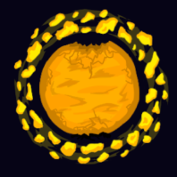
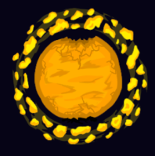
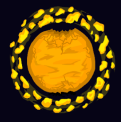

Это фан игра (если можно так выразится) по другой игре Outer Wilds
По идеи из себя она представляет почти все тоже самое как Outer Wilds
Просто в немного в другой оболочке, механиками, персонажами, планетами и собственно сюжетом
